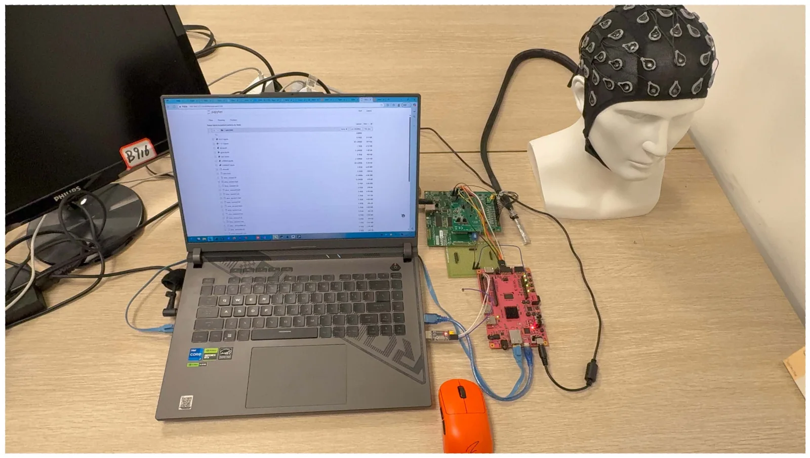
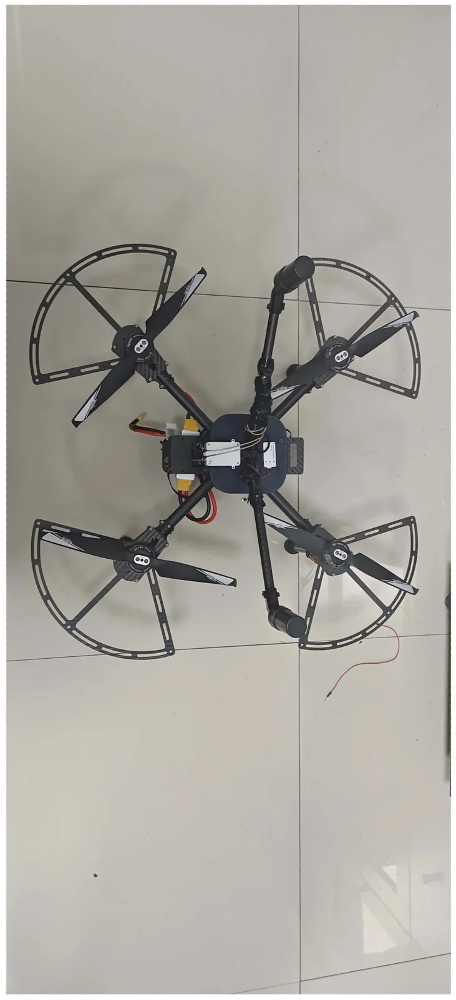
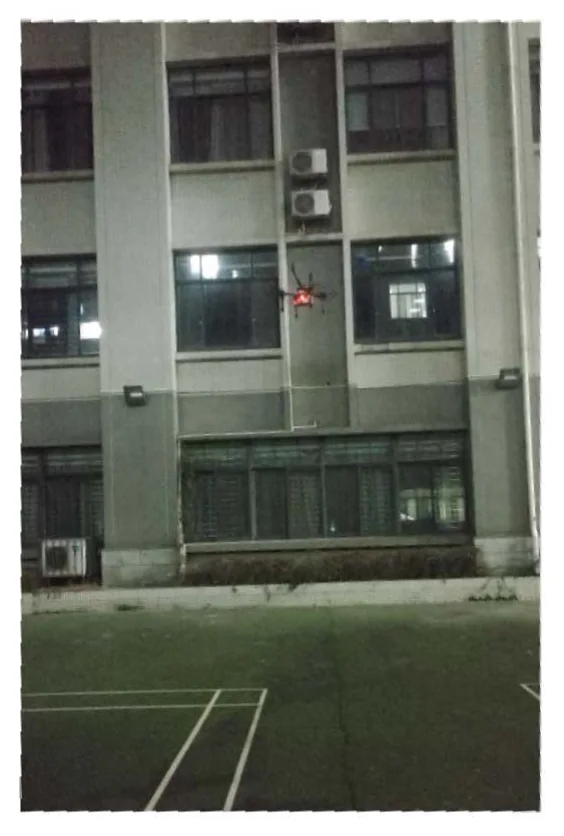
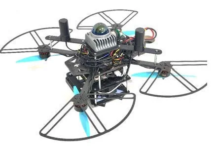

2025
RISC-V 五级流水线 CPU 与 RT-Thread 移植
五级流水线、冒险处理、RT-Thread 移植和 Coremark 测试串在一起，问题集中在处理器设计和系统软件的接口处。
Wuhan University
Electronic Information Engineering
Embedded systems / autonomous platforms / hardware-aware software
I am drawn to systems where code has to negotiate with devices, timing, and uncertainty.
本科阶段做过处理器、RTOS、FPGA 信号处理、无人机感知定位和嵌入式控制。方向并不完全相同，但问题经常落在同一组细节上：硬件边界、实时调度、接口、日志和反复验证。
Field demos




Selected work
2025
五级流水线、冒险处理、RT-Thread 移植和 Coremark 测试串在一起，问题集中在处理器设计和系统软件的接口处。
2025
ZYNQ + ADS1299 的多通道脑电采集台架，PL 端实现 FBCCA 并行流水线，围绕采集链路和实时处理做验证。
2024
Jetson Orin NX 上跑 FastLIO2 和 YOLO11-OBB，联调定位、识别、地面站回传和通信链路。
2024
ESP32-S3 + FreeRTOS 的边缘计算智能车，主要处理定位、控制接口和团队协作调试。
2024
RTK 定位、PX4/QGC/NTRIP 配置、FastPlanner 自主避障和管理网站的低空任务系统联调。
Systems
资源、时延、接口和硬件边界，常常先决定问题的形状。
采集、计算、控制、通信和可视化接到一起后，很多问题才真正出现。
指标、日志、复现实验和长时间测试，比单次演示更说明问题。
这些经验自然延伸到机器人、边缘智能、智能硬件、信号处理和体系结构。
Contact